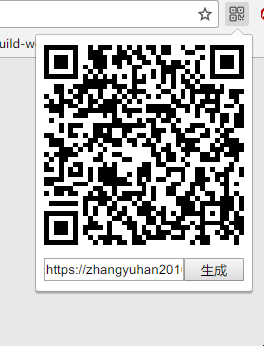
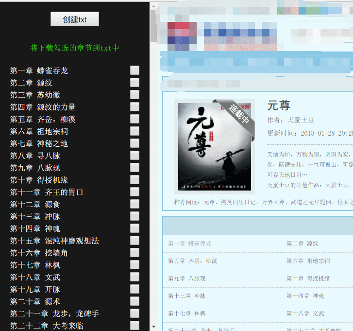

js
/* 获取当前标签的URL */
chrome.tabs.query({
active: true,
lastFocusedWindow: true
}, function (tabs) {
let url = tabs[0].url
drawCode(url)
})
/* 绘制二维码 */
function drawCode (url) {
$('.reload input').val(url)
$('#qrcode').html('').qrcode({width: 200, height: 200, text: url})
}
$('button').on('click',function () {
drawCode($('input').val())
})右键菜单设置
chrome.contextMenus.create({
'type':'normal',
'title':'生成二维码',
'onclick': showCode
});
function showCode () {
/**/
}
/* 离开popup改变icon */
chrome.windows.onFocusChanged.addListener(function(window) {
chrome.browserAction.setIcon({path: '/images/qrcode.png'})
});manifest.json
{
"manifest_version": 2,
"name": "二维码生成器",
"version": "1.0",
"description": "利用二维码库制作的二维码生成器",
"icons": {
"128": "images/qrcode.png"
},
"browser_action": {
"default_icon": {
"19": "images/qrcode.png",
"38": "images/qrcode-hover.png"
},
"default_title": "生成二维码",
"default_popup": "index.html"
},
"permissions": [
"tabs",
"activeTab",
"contextMenus"
],
"background": {
"scripts": [
"js/background.js"
]
}
}在学习node爬虫的时候,突然有一个想法 浏览器端实现一个爬虫可不可以呢？
说着咱就开始写,我准备用扩展程序的背景页来做,然后发现跨域 后续又想到可以注入脚本,于是打开小说网站的目录页,准备和node爬虫用一样的方法
第一步 获取小说的目录
获取目录以后那就开始请求HTML吧,那就用axios来整
第二步 获取HTML里的内容
没有浏览器端的cheerio,我该怎么获取里面的dom
创建一个节点,然后挂在body里,ifarme行不,然后就可以使用jQ来取内容
啊哈哈,我真是太棒了,然而事情并不简单...
经过一系列不忍回首的敲打,我选择直接正则匹配内容,通过匹配div的ID、Name取到了文章内容
第三步 写入文档
啊,怎么创建一个文档呢,经过不辞幸苦的搜索找到了createObjectURL 后续的事情一定很简单了吧,无脑拉取输出
但是网站访问限制,请求并发的问题也避不过去呀
后续
一个网站怎么够呢,我的目标是星辰大海
这时候问题就让人难以抉择了,网站的内容目录ID各不相同
那简单,每个host作为一个key,写写规则存到本地不就行了,在弄个分享规则到云上,岂不美滋滋
可是不想改代码呀...
就选了几个目录内容差不多的网址捏一捏,😄
本地小说阅读
下载完了怎么看呢？总不能用文本看吧,那咱再来弄个阅读器
说是阅读器,其实也是注入脚本和样式在file网址下,右键一下,发现浏览器打开文档在pre,那就来改造吧
生成目录
通过正则匹配第N章 xxx的,然后给他高亮,这时候我又想,那刚才写入的时候可以直接标记一下文章章节.
当然你知道的,我懒...
自动翻页
一开始是通过top值滚动,这样滚起来有点尬尬的 就换成tranform加过渡来翻页 效果还是有点瑕疵,看的时间久了眼花
设置间距颜色什么的
这个很简单,但是找到合适的配色不容易,简单扒了下起点的配色
这个项目优化的点还很多,后续再更新

可以把vue项目npm run build 以后,在manifest.json修改default_popup的入口为打包后的页面
下载完成后打开扩展程序chrome://extensions/勾选开发模式,将下载的扩展拖入安装